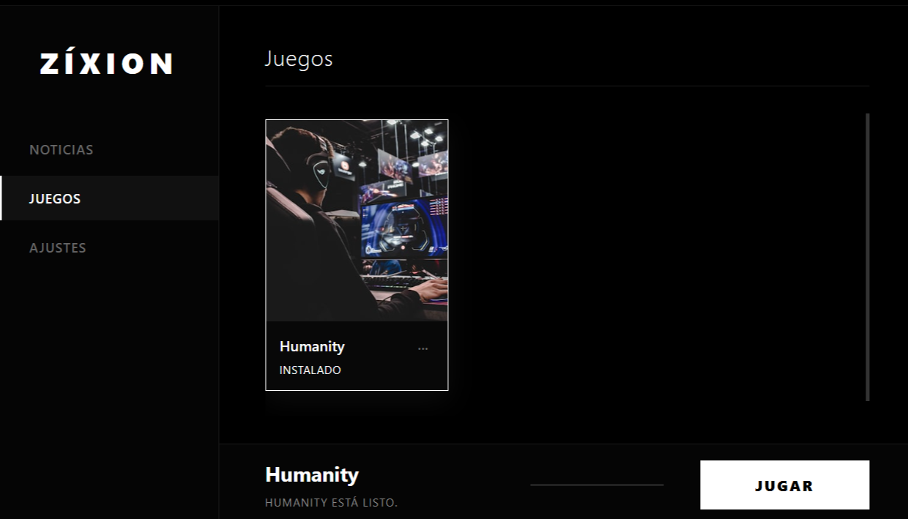

¿Qué es ZixionLauncher?
Es un lanzador de videojuegos de escritorio diseñado para gestionar los juegos que desarrollo y centralizar su descarga y manejo en un solo lugar.

Tu biblioteca de juegos centralizada y sin distracciones
Es un lanzador de videojuegos de escritorio diseñado para gestionar los juegos que desarrollo y centralizar su descarga y manejo en un solo lugar.

Puedes descargar la última versión de ZixionLauncher directamente desde aquí.
Descargar ZixionLauncher